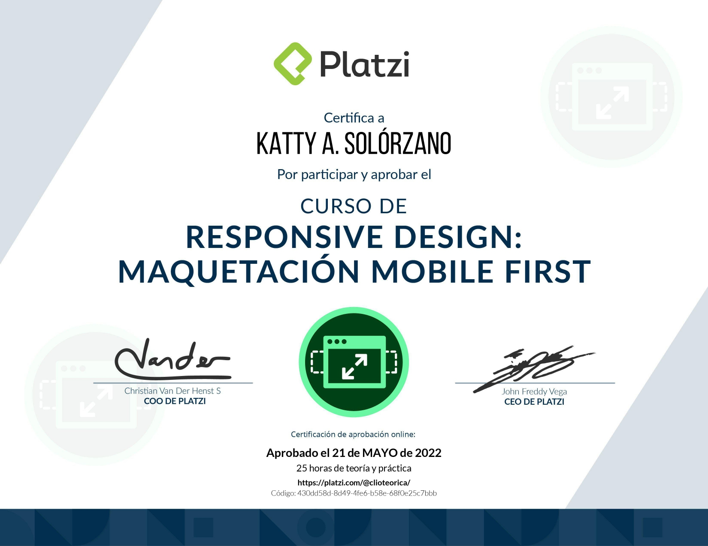

Bienvenidos a mi página
Aunque mi formación de base es como humanista (historiadora, escritora y editora), fue precisamente escribiendo que comencé a interesarme en la tecnología, para terminar aprendiendo sobre el mundo de la web.
Hoy todo el mundo está unido y, a través del desarrollo web, formamos parte de esa conexión.
Destrezas
Estas son algunas de las principales herramientas que pongo en práctica. Encontrarás más en mi perfil de LinkedIn.




Habilidades
Que me ayudan a potenciar al máximo cada proyecto:
- Autogestión
- Afán de aprendizaje
- Trabajo en equipo
- Resiliencia
- Adaptabilidad
- Creatividad
- Capacidad pedagógica y amor por la enseñanza